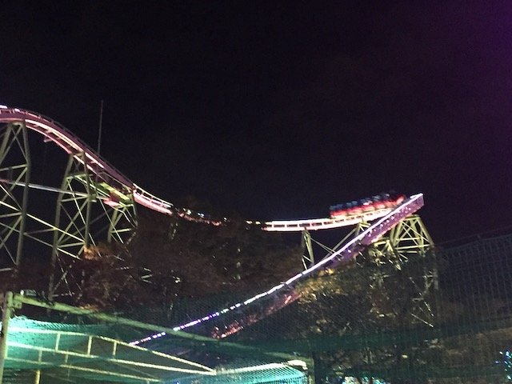

| |

Momonga Standing & Loop Review

For today's review, we're going back in time to my visit to Yomiuriland to ride one of the more unique coasters that has been built, Momonga Standing & Loop Coaster. Now if you look at this coaster alone, this looks like it was NOTHING special. A very standard generic roller coaster. However, one thing made this ride special and unique. The trains. Specifically, this ride had two different trains that provided two different rides. There's the regular sit down trains, and then there's also the Togo Stand Up Trains. So yeah. You could choose to ride this ride standing up, or sitting down if you're one of the people who hates Stand Up Coasters (BOO!!! LAME!!!). We're standing up, but this review will function both for riding it standing up or sitting down. Anyways, we got in the cars. Whether you sit down or stand up was your choice (Ideally, I would've recommended riding this ride twice. Once standing, and once sitting). But yeah, fasten the restraints, we moved over to the main track, and off we went! We climbed up the lifthill. There wasn't much of a view, but we did see one thing. A loop. Yep. This lifthill threaded a loop. Well, we can certainly see where the Loop in Standing & Loop came from. It's a small lifthill. So we crested the lifthill, and began to head down the first drop. It wasn't a big first drop by any means, but it was still a lot of fun. And it gave us some decent speed. And now, we got to go through said loop. STANDING AND LOOP!!! OR SITTING AND LOOP!!! Again, nothing special here. Just an ordinary vertical loop. But we're still having fun here. We then headed up into a helix. It wasn't an exciting helix by any means, but you know what? I was still having fun. Even if this helix was fairly generic and just an excuse for more what felt like more straight track. Dip down, and head up into another turnaround. There weren't many laterals here, as was the case with the helix. We just cruised through, and glided right into the brake run. As a coaster, this ride was pretty lame. Honestly, I felt like this coaster is something you would build in RCT2 as a tutorial for "How to build a Stand Up Coaster". Make it have a drop, make it have a loop, and make it have a helix. And that was literally it. Really, the only thing this ride was known for is having the gimmick of getting to choose between standing up or sitting down. Sure, it may have been dull both as a stand up coaster (This easily takes the cake for dullest stand up coaster I've ridden) and as a sit down coaster. Yeah. I'm not shedding any tears for the loss of Momonga Standing & Loop. But not only was it cool to ride as a novelty coaster, but it made me think. A lot of parks are saying "F*CK OUR STAND UP COASTER!!!" Cedar Point, California's Great America, and Six Flags America ALL have turned their stand up coasters into floorless coasters. Now it was all right for those rides, since none of those were really special stand up coasters, and I liked the trend at first. But it QUICKLY got old, and now I fear that the great stand up coasters will be converted and ruined (Don't do it SFOG! Thank god SFMM has Scream for insurance). But this ride has got me thinking. What if any of the other parks considering going down the floorless route. Instead of picking a side, how about a compromise? What if you rebuilt your stations, and made it so that you could have one stand up train and one floorless train? The people who hate stand up coasters could just ride the floorless side, I wouldn't have to worry about great stand up coasters dying, and I could enjoy the floorless train as well, and everybody is happy. Momonga Standing & Loop may have been a mediocre credit only valuable for the novelty of it. But hopefully, that feature won't be so unique in the future and this coaster can inadvertantly save some great stand up coasters and make a lot of enthusiasts happy. Even in death, this coaster can be of a great inspiration for the roller coaster community.
6/10
Location: Yomiuriland
Momonga Standing & Loop opened in 1979
The Stand Up Train was added in 1982
Died: September 20, 2021
Built by: Togo
Last Ridden: November 8, 2018
Momonga Standing & Loop Photos



Home
|